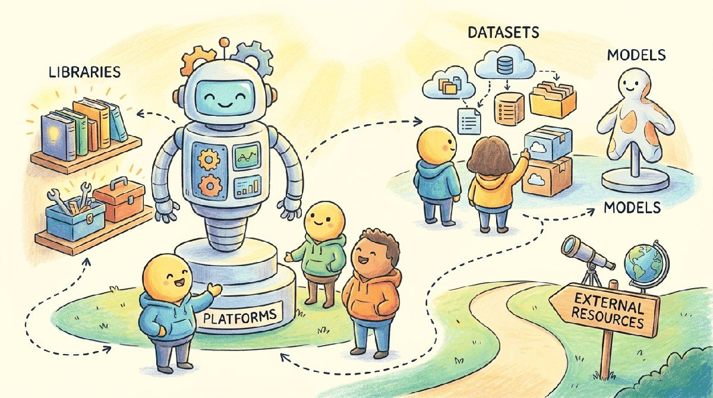

"Every industry thinks its AI problem is unique. Mostly it is the same problem with a different vocabulary."
Pip, Vertical-Specializing AI Agent
Chapters 67 through 78 walked one industry at a time. This chapter is the vertical tooling: domain-specific LLMs (BloombergGPT, Med-PaLM, Sec-PaLM), vertical RAG stacks, sector-specific evals, and the integration patterns that show up in any vertical AI product.
Part XI surveyed how LLMs are applied across industries: legal, financial, healthcare, education, cybersecurity, software, customer service, scientific research, and more. This chapter is the per-vertical vendor map: Harvey and Hebbia (legal), BloombergGPT (finance), Med-PaLM (healthcare), Khanmigo (education), Microsoft Security Copilot (cyber), and many others.
Chapter Overview
Part XIV covered eight industries from legal to manufacturing. This chapter consolidates the industry-solution toolchain: the HIPAA-BAA, FedRAMP-authorized, EU-AI-Act-aligned platforms, the per-industry connector and SDK ecosystems, the domain-specific benchmarks, the continued-pretrained vertical models (the pattern that consistently produces good vertical models in 2024 to 2026), and the per-industry external reading starting points.
Industry-solution tooling is the index of vendor, library, benchmark, and model choices that cross-cut Part XIV. Use this chapter as the bookmarkable reference when picking a stack for any vertical.
- Choose HIPAA-BAA, FedRAMP, or EU-AI-Act-aligned platforms by industry constraint.
- Apply per-industry connector and SDK ecosystems to a vertical product.
- Evaluate domain-specific benchmarks for legal, finance, healthcare, education, cybersecurity, government, manufacturing, and creative use cases.
- Architect a vertical model via continued pretraining on a domain corpus rather than from-scratch training.
- Identify the per-industry literature and communities that anchor each vertical.
Industry tooling is mostly vendor SaaS. The exception is the vertical-specific open libraries:
pip install langchain-communitylangchain-community includes a long list of vertical-specific connectors (FHIR for healthcare, EDGAR for finance, CourtListener for legal, etc.) that save weeks of boilerplate.
Sections in This Chapter
Prerequisites
- At least one of Chapters 67 through 78
- RAG and embedding tooling from Chapter 36
- Evaluation tooling from Chapter 45
- 74.1 Platforms For healthcare deployments, the binding question is which API providers offer a HIPAA Business Associate Agreement (BAA).
- 74.2 Libraries & Frameworks Each industry has its own connector / SDK ecosystem.
- 74.3 Datasets & Benchmarks Each vertical has domain-specific benchmarks.
- 74.4 Models The pattern that consistently produces good vertical models in 2024-26 is not "train a domain model from scratch" but "continued-pretrain a strong general base on a domain corpus, then run a...
- 74.5 External Reading & Communities The list below is a starting point per industry, not a survey.
What Comes Next
Part XII (Frontiers) closes the book. Chapter 65 wraps up with the frontier-research toolbox. Continue to Chapter 75: Frontier Architectures & Scaling.